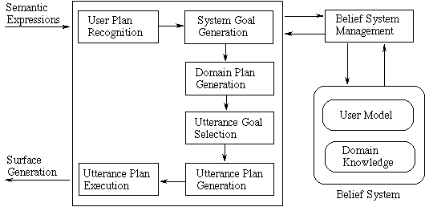

(48) Experimental Dialogue System with Pragmatics-based Utterance
Selection Mechanism
Machine: PSI
Environment: SIMPOS
Language: ESP
Source Code: 1.0 MB
Documents: Manual (English/Japanese)
Overview
This system is directed to the research on the criteria required for
dialogue systems to satisfy in order to communicate with its users
successfully and cooperatively.
Configuration

Function
This system generates response utterances to support achievement of
user's goal by selecting contents of utterance, depending on topics
that vary as dialogue proceeds, user's knowledge, and other pragmatic
constraints.
Features
- The system deals with generation of response as planning to
achieve user's goal.
- The system selects from possible variations of utterance, the most
suitable one for the given situation, using the criteria that is
represented as estimation functions.
- In generating an explanatory multi-sentential text as a response,
the system determines the text structure using estimation functions.
- By planning utterances refering the model of user, the system can
generate responses that correct user's misconceptions.
FTP
- Experimental Dialogue System with Pragmatics-based Utterance
Selection Mechanism [550K]

www-admin@icot.or.jp